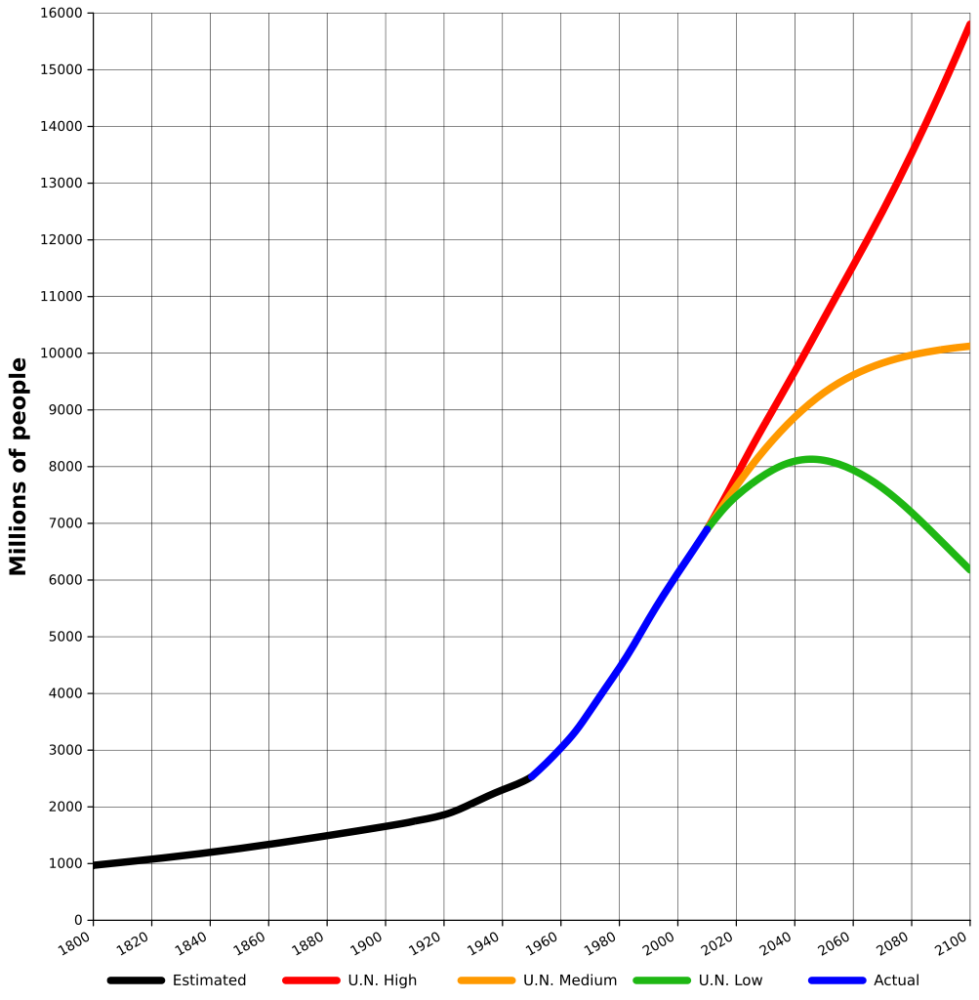
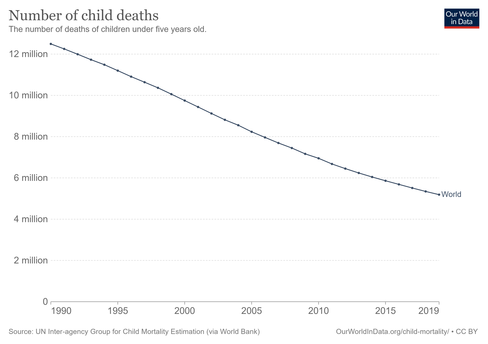
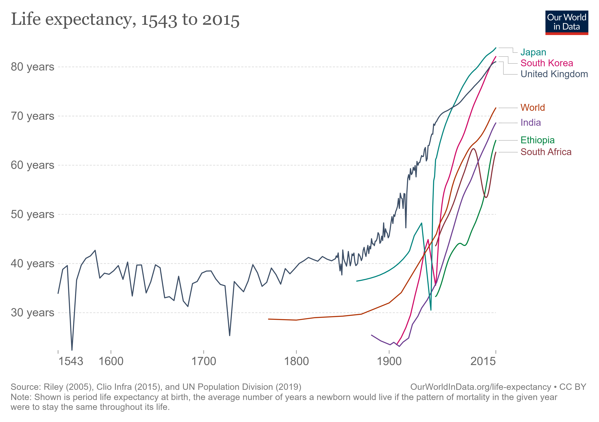
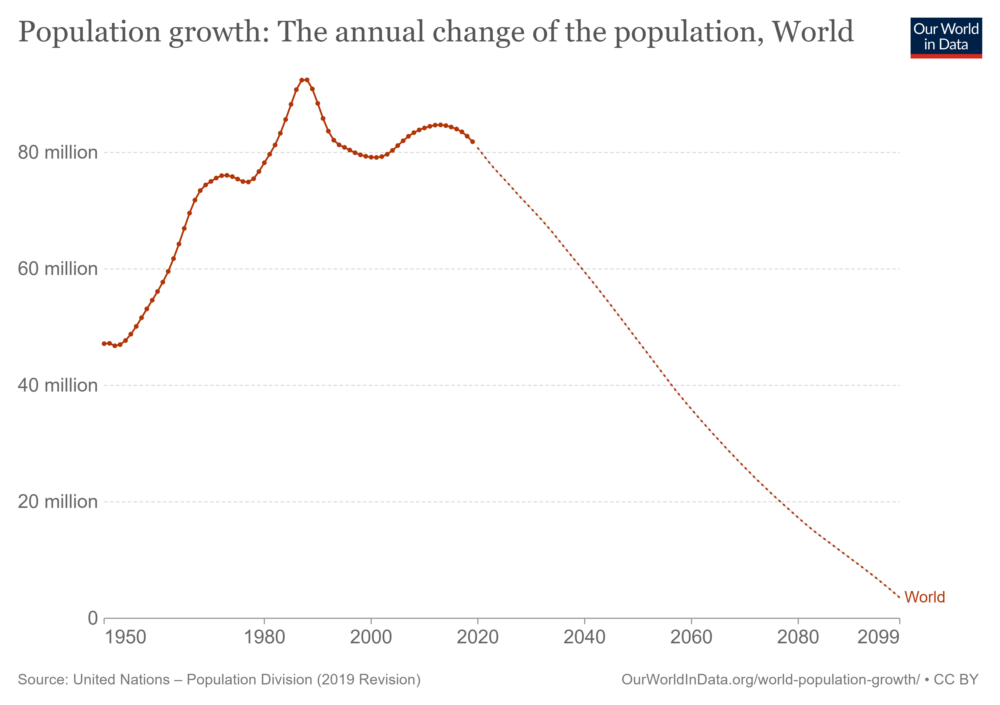

Научные достижения и прогресс
В ХХ веке возникли опасные вызовы для человечества: численность населения стала рости.

В сильном росте численности населения виновата наука. Она дала нам: прививки, гигиену, асептику и антисептику, антибиотики, большой прогресс в хирургии.

Средняя ожидаемая продолжительность жизни катастрофически выросла.


Биология - наука 21 века: большое число сотрудников, работающих за зарплату, денег, выделенных на научные исследования.
Гранты правительства РФ(40 штук, 6 млрд рублей):
- Биология и медицина - 13 шт
- Физика, астрофизика, атомная энергетика - 6 шт
- Химия, науки о материалах - 3 шт
Почему на биологию дают средства:
- Медицина - все хотят жить долго и не болеть
- Производство пищи
- Биотопливо, охрана природы и т.п.
Генная инженерия
Генная инженерия - результат развития молекулярной биологии.
Темпы развития генной инженерии:
1944 - стало известно, что ДНК содержит генетическую информацию
1953 - открытие структуры ДНК
1961 - генетический код был расшифрован
Началась эра молекулярной биологии: ученые научились "читать" тексты из аминокислот и нуклеотидов и изменять их.
Лизогения - вирусная ДНК встраивается в бактериальную. Измененная ДНК может передаваться.
{kind=link}
{kind=link}
{kind=link}
{kind=link}